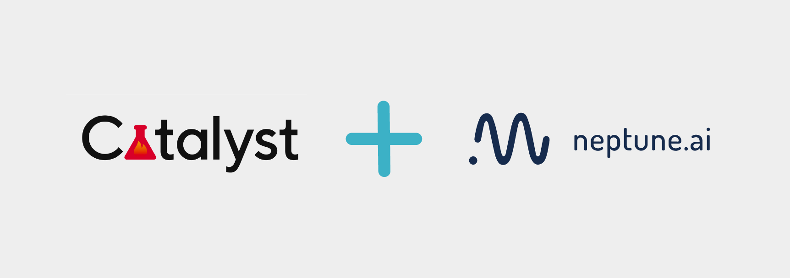

Log Catalyst metrics to neptune
{kind=link}
Prerequisites
Integration with Catalyst framework is introduced as a part of logging module so just need to have neptune-client and neptune-contrib installed.
pip install neptune-client neptune-contrib['monitoring']
Create the NeptuneLogger
from catalyst.contrib.dl.callbacks.neptune import NeptuneLogger
neptune_logger = NeptuneLogger(
api_token='ANONYMOUS', # your Neptune token
project_name='shared/catalyst-integration',
offline_mode=False, # turn off neptune for debug
name='catalyst-example',
params={'epoch_nr': 10}, # your hyperparameters, immutable
properties={'data_source': 'cifar10'}, # mutable
tags=['resnet', 'no-augmentations'], # tags
upload_source_files=['*.py'], # files to save, grep-like
)
Pass the neptune_logger to the runner.train callbacks argument
from catalyst.dl import SupervisedRunner
runner = SupervisedRunner()
runner.train(
model=model,
criterion=criterion,
optimizer=optimizer,
loaders=loaders,
logdir=logdir,
num_epochs=num_epochs,
verbose=True,
callbacks=[neptune_logger]
)
Monitor your Catalyst training in Neptune
Now you can watch your Catalyst model training in neptune!
Check out this example experiment.

Full Catalyst monitor script
Simply copy and paste it to catalyst_example.py and run.
Remember to change your credentials in the NeptuneLogger:
neptune_logger = NeptuneLogger(
'api_token': 'ANONYMOUS', # your Neptune token
'project_name': 'shared/catalyst-integration',
...
)
import collections
import torch
import torchvision
import torchvision.transforms as transforms
batch_size = 16
num_workers = 4
num_epochs =12
logdir = 'exps'
data_transform = transforms.Compose([
transforms.ToTensor(),
transforms.Normalize((0.5, 0.5, 0.5), (0.5, 0.5, 0.5))])
loaders = collections.OrderedDict()
trainset = torchvision.datasets.CIFAR10(
root='./data', train=True,
download=True, transform=data_transform)
trainloader = torch.utils.data.DataLoader(
trainset, batch_size=batch_size,
shuffle=True, num_workers=num_workers)
testset = torchvision.datasets.CIFAR10(
root='./data', train=False,
download=True, transform=data_transform)
testloader = torch.utils.data.DataLoader(
testset, batch_size=batch_size,
shuffle=False, num_workers=num_workers)
loaders['train'] = trainloader
loaders['valid'] = testloader
import torch
import torch.nn as nn
import torch.nn.functional as F
class Net(nn.Module):
def __init__(self):
super().__init__()
self.conv1 = nn.Conv2d(3, 6, 5)
self.pool = nn.MaxPool2d(2, 2)
self.conv2 = nn.Conv2d(6, 16, 5)
self.fc1 = nn.Linear(16 * 5 * 5, 120)
self.fc2 = nn.Linear(120, 84)
self.fc3 = nn.Linear(84, 10)
def forward(self, x):
x = self.pool(F.relu(self.conv1(x)))
x = self.pool(F.relu(self.conv2(x)))
x = x.view(-1, 16 * 5 * 5)
x = F.relu(self.fc1(x))
x = F.relu(self.fc2(x))
x = self.fc3(x)
return x
model = Net()
criterion = nn.CrossEntropyLoss()
optimizer = torch.optim.Adam(model.parameters())
from catalyst.contrib.dl.callbacks.neptune import NeptuneLogger
neptune_logger = NeptuneLogger(
api_token='ANONYMOUS', # your Neptune token
project_name='shared/catalyst-integration',
offline_mode=False, # turn off neptune for debug
name='catalyst-example',
params={'batch_size': batch_size,
'epoch_nr': num_epochs,
'num_workers': num_workers}, # your hyperparameters, immutable
properties={'data_source': 'cifar10'}, # mutable
tags=['resnet', 'no-augmentations'], # tags
upload_source_files=['catalyst_example.py'], # files to save, grep-like
)
from catalyst.dl import SupervisedRunner
runner = SupervisedRunner()
runner.train(
model=model,
criterion=criterion,
optimizer=optimizer,
loaders=loaders,
logdir=logdir,
num_epochs=num_epochs,
verbose=True,
callbacks=[neptune_logger]
)